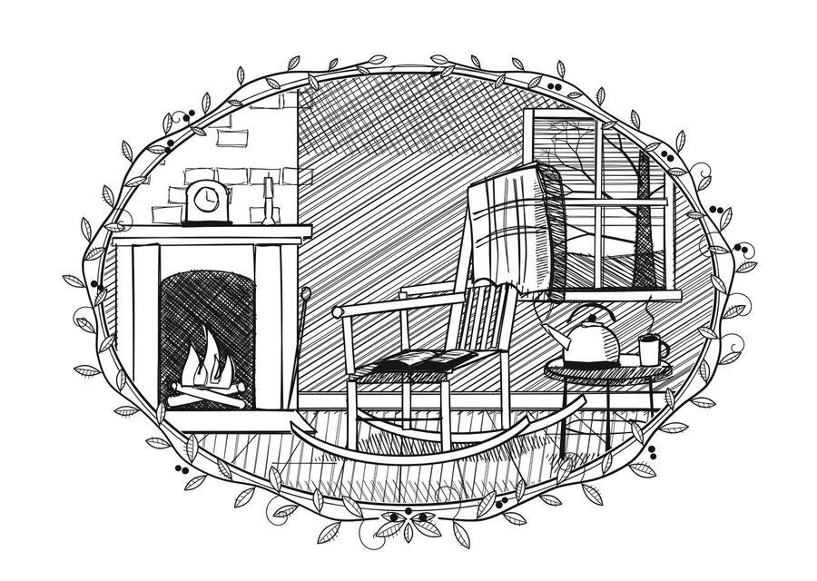
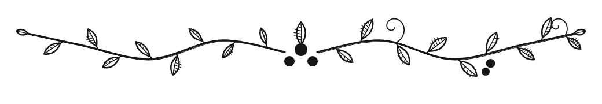

Chapter One
The Assignment

“Okay everybody, time to go home—and remember, you need to start your Holocaust-themed story! See you tomorrow!”
Ms. Becky said it in her usual cheery voice, the one that bounced off the cinderblock walls of Room 14 and came back sounding even cheerier. For a second nobody moved. Then Owen Park said, from the back row, “Tomorrow’s Saturday.”
Ms. Becky laughed and smacked her forehead with the heel of her hand. “Monday. See you Monday. My brain’s already on the weekend.”
Any other day it would have gotten a big laugh. Today it got a small one, and then the room filled up again with chairs scraping, zippers, the wheeze of the hand-sanitizer pump, and under all of it, the rumor. Ryan had heard it four times since lunch, and it got bigger every time. Two weeks. Until Easter. Kayla’s aunt was a nurse, and Kayla’s aunt said they weren’t coming back at all.
Ms. Becky hadn’t said any of that. What she had said, in a voice that tried hard to sound ordinary, was that they should take home anything in their desks they might want over the weekend, which was a strange thing to say about a weekend.
On the whiteboard, in her purple marker and her loopy handwriting, the assignment was still up:
HOLOCAUST STORY PROJECT. A story, poem, or report connected to the Holocaust. Due before summer. Drawings welcome!
Next to Drawings welcome! there was a pale purple smudge. Ryan had watched her make it. She had drawn a smiley face there out of habit, and then she had stood looking at the smiley face and the word Holocaust on the same board, and rubbed the smile out with her thumb.
He tightened the strap of his backpack, heavy with his whole desk, as he walked out. For once, he was excited about homework. Not because he liked school—he didn’t, mostly, except for science and lunch—but because this time he had a story that mattered. A story that was his.
His grandfather.
A survivor.
He knew the word the way he knew Grandpa’s birthday, or the name of the city in Poland where Grandpa was born. It was a fact that sat in the family like a piece of furniture nobody used. What he didn’t know was the story. Nobody did, as far as Ryan could tell. When he was seven he had asked about Poland at dinner, and his mom had said, “Grandpa doesn’t talk about that, sweetheart,” in a voice that closed the subject like a lid on a box, and Grandpa had gone on cutting his chicken into very small, very exact pieces.
But a school assignment was different. A school assignment was practically the law.
The air outside was cooler than he expected, a gray wind with a bite in it, as if even the sky knew what kind of story he was about to step into. School had let out an hour early so the teachers could have a “planning meeting,” which everybody knew meant a meeting about the virus. Owen caught up with him at the corner, his hood up.
“If they close school,” Owen said, “I’m building a city in Minecraft. A whole city. With a subway.”
“You can’t even build a door that opens the right way.”
“That was one time. And it was a secret door. Your parents back Sunday?”
“Supposed to be.”
“My dad says they’re stopping flights from Europe.”
“Not England,” Ryan said. “Dad said England’s not on the list.”
Owen shrugged inside his hoodie. “Yet,” he said, in exactly his father’s voice, and peeled off down his own street with a wave and a big fake cough that made a lady walking her dog cross to the other sidewalk.
Ryan’s phone was in his jacket pocket, his mom’s old one with the cracked corner, which he was allowed to have “for emergencies and for texting your parents and not for YouTube at two in the morning, Ryan.” That morning his dad had sent a photo of the river in London, brown and wide under a white sky. Flight still on for Sunday. For now. Heathrow is a zoo. Love you bud.
They had flown out on the sixth. Dad was a civil engineer with meetings about a bridge, and Mom had gone along for a week of vacation, her first trip without Ryan since he was born. “You’ll have Grandpa,” she had said at the airport, hugging him too long. “And Mrs. Delgado. You’ll have more security than the crown jewels.”
Mrs. Delgado was out on her porch when he turned up the driveway, in her purple fleece, holding a mug that said WORLD’S OKAYEST NURSE. She had been an emergency-room nurse for thirty-one years and had retired, she said, so she could boss people around for free.
“Did your grandfather eat lunch?” she called.
“I don’t know. I was at school.”
“Find out. Tell him I’m watching. And wash your hands. Twenty seconds. I’ll know.”
He opened the front door to the sound of a kettle whistling.
The house smelled like Friday, warm and sweet and a little eggy. Two braided loaves of challah sat cooling on the rack by the stove under a dish towel. There had been two every Friday since Grandpa came to live with them. Ryan went into the kitchen and turned off the burner, and the kettle’s scream sank to a mutter and stopped.
His grandfather was sitting in his rocking chair by the fireplace, exactly where Ryan expected him to be, with his gray wool blanket over his legs and a fat paperback mystery open face-down on his knee. The fire was going. Grandpa liked a real fire, even in March, even though Ryan’s dad said the gas logs were perfectly good. Perfectly good is not the same as good, Grandpa always answered. His shirt sleeves were buttoned at the wrists. They always were, even in summer.
“You’re home early,” he said, smiling. “No detention today?”
It was a joke he had been making since kindergarten. Ryan had never had a detention in his life.
He chuckled anyway and dropped his backpack by the couch. “We got assigned a Holocaust story for class.”
The smile faded from his grandfather’s face. Not completely, but enough.
“I see,” he said. He closed the book and set it on the side table. His hands were old and spotted, with knuckles like walnuts, but they moved with the exactness of someone who had once needed precision to survive. He turned toward the fire.
“Then maybe,” he said, “it’s time I told you mine.”
Ryan sat on the rug, cross-legged, as he had when he was little. The living room seemed warmer than it had a minute ago, and stiller, as if the house were listening too.
But Grandpa didn’t start. He pushed himself up out of the rocking chair—it took two tries—and went into the kitchen and poured the water over the tea bag in his mug. Ryan watched him through the doorway. He watched him lift the mug and turn, and stop.
The calendar by the refrigerator was the free one from Mom’s credit union, a different covered bridge for every month. March was a red bridge in snow. Mom had written Tom & me—LONDON!! across the first week and back!! on the fifteenth. Today’s square was empty except for the number.
Friday. The thirteenth.
Grandpa stood looking at it, the tea bag string hanging over the rim of the mug. He put out his free hand and laid two fingers on the square, the way you’d touch a pan to see if it was hot.
“Friday the thirteenth,” Ryan said. “Owen says that’s why everything’s going crazy.”
Grandpa didn’t answer. The refrigerator hummed. Ryan waited for the joke—Grandpa always had a joke, usually a terrible one—but it didn’t come. Grandpa came back to the rocking chair and lowered himself into it, and when he set the mug on the side table it knocked against the wood twice before it settled.
Ryan almost asked. Then, for reasons he couldn’t have explained, he didn’t.
His grandfather stared into the fire crackling in the hearth.
“I was ten,” he began. “Like you. I lived in Kraków, in Poland. My father was a baker. My mother—she hummed songs when she cooked. We lived in a flat above our shop. Our windows looked out at a tram line and a row of chestnut trees that bloomed white in spring.”
“It was a beautiful life,” Grandpa said.

Kraków, August 1939
The singing came up through the floor.
Abram heard it before he was properly awake: his father’s voice in the bakery below, rising with the heat of the oven. It was a song with no words, or with words that had worn away, the way a stone step wears smooth in the middle—the kind of song a man sings when he is alone with his work and has forgotten anyone can hear. It was four in the morning. It was Friday, and on Fridays Abram was allowed down.
He took the back stairs barefoot. The stone was cold at the top and warm at the bottom, and when he pushed through the curtain the heat met him like a hand laid on his face.
The bakery at four in the morning was the best place in the world. The long table was white with flour, as if it had snowed indoors. The wooden trough of dough breathed under its cloth. The oven door glowed orange at the seams, and the room smelled of yeast and wood smoke. His father stood at the table with his forearms white to the elbow, shaping rolls with the heels of his hands, two at a time. And singing to them.
On a stool by the window sat Uncle Dawid, his father’s little brother, with his feet up on a flour sack and his harmonica in his fist.
“The dough doesn’t care if you sing, Chaim.”
“The dough cares,” said Abram’s father, without looking up. “The dough knows everything.”
Dawid played back the line his brother had just sung, a little faster, with a twist at the end like a wink. Chaim sang it again, slower. Dawid played it slower still, like a man falling asleep on a park bench, and Abram laughed out loud, and his father looked up, his beard full of flour, and saw him.
“Ah. The apprentice. Wash.”
Abram washed. Then he stood on the overturned crate at the end of the table, and his father laid six ropes of challah dough in front of him, pinched together at the top like the fingers of a hand.
“Over two,” his father said. “Under one. Over two. Again.”
By the third loaf the braid came out fat and even. The first loaf out of the oven that morning his father lifted on the peel, still smoking, and kissed. He kissed the first loaf every morning of his life, the way other men kissed the mezuzah on a doorpost. Then he broke it and gave the heel to Abram.
At a quarter past five the first tram came up Krakowska Street from the river: the long electric hum, the iron clatter, and then, right outside the bakery window, the bell. Ding-ding. Twice. That was Pan Nowicki, Marek’s father, who drove the early tram and rang twice every morning as he passed, rain or shine, the way another man might tip his hat. Chaim lifted a white hand toward the dark window, though Pan Nowicki couldn’t possibly see.
Upstairs a door opened. Then came his mother’s humming, and the slap of small bare feet on stone, and Miriam came through the curtain in her nightdress with her curls standing straight up on one side. She was two and a half and believed the bakery belonged to her. She went directly to the spill of flour under the table, sat down in it, and held up both hands white.
“Mirele,” said their mother from the stairs, “you’re a dumpling.”
“I’m a dumpling,” Miriam agreed.
Hannah came down in her apron, humming the song she always hummed when she cooked, a slow tune that climbed up and up and then came tumbling down, like a child sliding down a banister. She scooped Miriam onto her hip, and Miriam’s hands left two white prints on the shoulder of her dress, and Hannah didn’t even look.
By six the sky over the chestnut trees had turned the clean pale blue of a summer morning, and Janek Wójcik’s cart was in the street.
Janek had sold flour to Abram’s father for fifteen years. He had a farm and a mill out past the village of Grabie, east of the city, where the fields ran flat to the edge of the big forest, and a gray mare who stood with her head down while he carried the sacks in two at a time, one on each shoulder, as if they were pillows. Every sack had his name stamped on it in blue: J. WÓJCIK — GRABIE.
“The army took my other horse,” Janek said, when he and Chaim were drinking their tea standing up. “Requisitioned. They gave me a piece of paper.”
“And you? They didn’t want you?”
“Too old. Too fat. The horse is younger.” Janek looked down into his glass. “There are soldiers on all the roads now. Digging. Everybody is digging.”
Chaim handed him a loaf for the road. Janek rested his big hand on Abram’s head for a second, as he always did, and went.
Then Marek came.
Marek Nowicki came every morning at seven with his mother to buy rolls, and every morning in summer he stayed. He was ten too, three weeks older than Abram, which he mentioned often. He had a cowlick no water could flatten, a small silver medal of the Virgin on a chain around his neck, and pockets that always held string, chalk, and at least eleven marbles. He also owned the book of ships. Every boy in Kraków seemed to have that book that year, fat, with a blue cloth cover.
While Pani Nowicka bought her rolls and told Hannah that the price of eggs was a crime, the boys took two empty flour sacks and two sticks of charcoal from the tin by the oven and lay on their stomachs on the bakery floor with the book open between them.
They copied ships. Above them his father sang over the ovens, and flour drifted down from the table’s edge and settled on their hair and backs like snow. Abram always drew a castle first, and then a ship sailing past it, crowded with tiny people waving. Marek drew his waves as rows of little m’s rolling away to the edge of the sack. He always put a swallowtail pennant on the mainmast. He always put in one gull, a stretched-out v above the sails, and only one.
“Why only one?” Abram had asked him once.
“Because he’s the lookout,” Marek had said, as if it were obvious.
That morning Marek drew a warship with seven guns and two smokestacks and a flag so big it would have tipped the whole thing over.
“That’s not a real ship,” Abram said.
“It’s a destroyer. My father says if the Germans come, the English and the French will come too, with ships like this.” Marek added an eighth gun. Then, out of habit, a pennant, and one gull. “Hundreds of them.”
“Ships can’t come to Kraków. It’s not on the sea.”
“They’ll come up the river.”
Abram thought of the Vistula, and the coal barges so slow you could hardly tell they were moving. “My father says nobody is coming. He says everybody is just shouting.”
“Your father says the dough knows everything.”
“The dough does know everything.”
They laughed so hard Marek’s charcoal snapped in half.
Afterward they ran down Krakowska under the chestnut trees, still hung with green spiked fruit, to see real ships. Their place was at the foot of the bridge, on the Kazimierz side, where a flight of stone steps went down from the embankment almost to the water. Upstream, Wawel Castle sat on its hill looking exactly as a castle should. Twice a day a white excursion steamer came puffing past with a striped awning over its deck, and the people under the awning waved at anybody at all, and the boys always waved back.
They played marbles on the flat stone at the top of the steps, where the cracks ran the right way, and Marek won Abram’s green cat’s-eye, the best marble Abram had ever owned, with a twist of green fire in its center.
“I’ll give it back when you beat me,” Marek said, holding it up to the sun.
“You’ll never give it back.”
“I will. When you beat me.” He patted his pocket. “So, never.”
That night Hannah boiled the sacks and hung them over the stove with all the other empty ones. In a week they would be dish towels, hemmed on her sewing machine. Every dish towel in the Rozens’ kitchen had once been a flour sack with Janek’s name on it, and every one of them, if you held it up to the window, still had the ghost of a ship in it somewhere. The charcoal never came all the way out.
It was the last week the world was ordinary, though nobody told them so.
In the evenings the neighbors came up to listen to the Rozens’ radio, a brown wooden box with a dial that glowed green. Abram lay under the table with Miriam asleep on his arm and listened to the grown-ups not say what they were thinking. One night the radio said that Germany and Soviet Russia had signed a pact promising never to fight each other, and old Pan Lederman from the second floor took off his hat and put it back on and said, in Yiddish, “If those two are friends, we are in trouble.”
His mother pasted strips of paper across the window glass in big X’s, so the glass wouldn’t fly into the room if it broke. Miriam wanted X’s on everything, including Abram’s forehead. At the bakery the line went out the door and around the corner. People bought six loaves, ten, to slice and dry into rusks that would keep for months. Chaim baked three times in one night, and still by noon the shelves were bare. People were buying bread the way they bought it before a holiday, except that nobody was smiling.
Kraków, September 1939
On the first of September, a Friday, Abram was braiding the third challah when the window rattled.
It wasn’t loud. It was a deep, dull thud far away, like a sack of flour dropped in another building, and then another, and the glass hummed behind his mother’s paper X’s. Flour sifted down from the shelf over the oven. His father’s hands stopped on the dough. His song stopped in the middle of a line.
Then the sirens began.
They came from everywhere at once, rising and falling, and under them a high drone like a wasp trapped in a jar, but enormous. Before anyone could stop him Abram was in the street in his apron, and there they were: airplanes, small and silver in the first light, in a neat shape like geese. Far off over the rooftops to the north, a column of black smoke stood up into the sky and leaned.
“The airfield,” said a man in an undershirt in the doorway across the street. “They’re bombing the airfield at Rakowice.”
His father’s floury hand closed on the back of his collar and pulled him inside.
Upstairs Miriam was crying, and Hannah was saying shh, shh, shh. Dawid came down the stairs two at a time with his suspenders hanging. The radio was talking fast.
His father stood at the table with his hands flat on the dough. They were trembling a little. So had the window glass.
Then Chaim Rozen pressed his hands down into the dough and pushed, and folded, and pushed, and began to sing again from the place where he had stopped. Louder than before. Loud enough to carry up the stairs, where Miriam’s crying caught and hiccuped and paused, to listen.
“Chaim,” Dawid said.
“It’s Friday,” his father said, between lines. “People will want challah. Bread still has to be bread.” He nodded at the six ropes of dough waiting on the board. “Over two. Under one.”
Abram’s fingers were stupid and slow, and the braid came out lumpy and crooked, and his father put it on the tray with the others anyway.
The war was five days long in Kraków, and then it was over, and then it began.
For five days the city filled with people trying to leave it, in carts piled with mattresses and grandmothers, on bicycles, on foot, carrying birdcages and babies. Every day there were new rumors, and every rumor ended the same way: the Germans would take the men. The thing to do was to go east. Thousands of Jewish men were going, walking out of the city in their good coats with bundles on their backs, toward the river San, toward Lwów, toward anywhere.
On the third night, Dawid packed a bag. He did it in the kitchen, where Abram was supposed to be asleep on the bench and wasn’t: two shirts, socks, bread, the harmonica in its cardboard box. Then he stood in the doorway with the bag on his shoulder and said, “Chaim. Come with me.”
Abram’s father sat at the table with his hands around a glass of tea he wasn’t drinking. “And Hannah? And the children? You want me to walk to Lwów with a two-year-old on my shoulders?”
“They’ll be safer without you. It’s the men they want.”
“Who says?”
“Everybody says.”
“Everybody said there would be no war.” His father turned the glass a quarter turn. “I’m a baker, Dawid. Who walks away from an oven? Everybody needs bread. Even them.”
“Chaim,” said Hannah from the bedroom doorway, her shawl around her shoulders, her face white. “Maybe you should go.”
His father looked at her for a while. Then he shook his head, once.
Dawid let the bag slide off his shoulder to the floor. He took the harmonica out of its box and played one sour, wobbling note, like a goat that has been insulted.
“Then I stay too,” he said. “Somebody has to annoy you.”
On the sixth of September, in the morning, the German army came into Kraków.
There was no battle. The city had been left undefended, its streets strange and empty, the shops shuttered, the trams stopped. Abram stood at the window of the flat with his family—his mother with Miriam on her hip, his father, Dawid with his hands jammed in his pockets—and looked down through the paper X’s at Krakowska Street.
They came up from the bridge.
First motorcycles with sidecars, and men in goggles. Then trucks, gray-green, with canvas backs. Then huge horses pulling guns on wheels. And then the soldiers, rows and rows of them, helmets like upside-down bowls. Their boots hit the cobblestones all together, crash, crash, crash, one sound made by a hundred feet, so that it didn’t sound like men walking at all. They were tall and stiff, and their faces under the helmets were young and pink and empty, their eyes cold as steel. They marched like machines.
Abram had drawn a hundred ships, and on every deck, always, somebody waving. Nobody down there was waving.
The chestnut trees had begun to drop their fruit. As the column passed under the third tree, a green chestnut came loose and struck a soldier’s helmet with a hollow tock that Abram heard all the way up at the window. It bounced off and rolled into the gutter. The soldier didn’t flinch. He didn’t look up. He didn’t break step.
“Horsies,” said Miriam happily, and clapped her hands.
One soldier did look up then, in the middle of a row, his face turning toward the sound of a child’s voice at a window. Abram saw his eyes for a second: pale, unremarkable, the eyes of anybody. Then his mother stepped back from the glass and pulled Abram with her and drew the curtain, and the room went brown and dim, and they stood in it, all of them, listening to the boots go by.
There was no tram that morning. Pan Nowicki did not ring his bell.
“And then one day,” Grandpa said.
He lifted his hand from the arm of the rocking chair, and his fingers snapped. It was a small sound, dry, like a twig breaking. Ryan jumped anyway.
“Poof.”
He let the hand fall.
“Gone. Just like that. I was a boy. Then—I wasn’t.”
Ryan realized his mouth was open and closed it. While Grandpa talked, the fire had burned down to a bed of orange coals.
“It wasn’t really one day, though,” Ryan said. “Was it?”
“No.” Grandpa looked at his fingers as if they had done something without permission. “But when you look back, that’s how it feels. Like somebody snapped.” He picked up his tea, found it cold, and put it down. “And then the rules changed. We were Jews. Which meant we weren’t people anymore.”
Ryan turned the words over, and they wouldn’t fit together, like puzzle pieces from two different boxes. “How can someone not be a person just because of their religion?”
His grandfather gave him a sad smile. “That’s what I asked too. I asked my father. I asked my mother. I asked God, a couple of times, and He was busy.” He shook his head. “But the world doesn’t always make sense when it’s broken. First, we couldn’t go to the park. Then the library. Then school. Then—” He stopped and pressed his lips together, and Ryan watched him decide not to say the next thing yet. “One thing at a time. So you get used to each thing before the next one comes.”
“I draw ships too,” Ryan said. It came out before he could decide whether it was a dumb thing to say. “Spaceships, mostly. But ships.”
“Of course you do,” Grandpa said, and for a second the real smile came back. “Of course you do.”
“What happened to Marek? Did you ever get your marble back?”
“Marek.” Grandpa said the name carefully, as if testing whether it still worked. “Marek is another day.”
In the corner the TV was on with the sound off. Grandpa liked to keep the news in the room “like a dog you don’t trust.” Under a man at a podium, a red banner crawled along the bottom of the screen: MORE INDIANA SCHOOL DISTRICTS ANNOUNCE CLOSURES . . . EUROPE TRAVEL RESTRICTIONS TAKE EFFECT AT MIDNIGHT . . . AIRPORTS CROWDED AS TRAVELERS RUSH HOME . . .
His phone buzzed. Owen. NO SCHOOL MONDAY. ITS OFFICIAL. elearning. MINECRAFT CITY IS HAPPENING
And then, a few seconds later: ur parents ok?
Ryan read that one twice. He thought of his mom’s back!! in the square for the fifteenth. He looked at his grandfather, who wasn’t watching the TV. Grandpa was looking past it, through the kitchen doorway, at the calendar you could just see from here, the red bridge in the snow.
“Grandpa,” Ryan said. “Is that the worst part? The soldiers coming?”
His grandfather turned his face back to the fire. In the orange light the lines of it looked deeper, as if somebody had carved them there on purpose, with a sharp tool and a lot of time.
“That was just the beginning,” he said. “Just the first flame before the fire.”